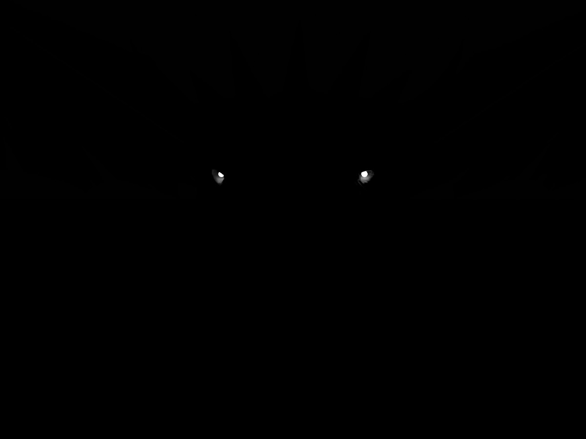
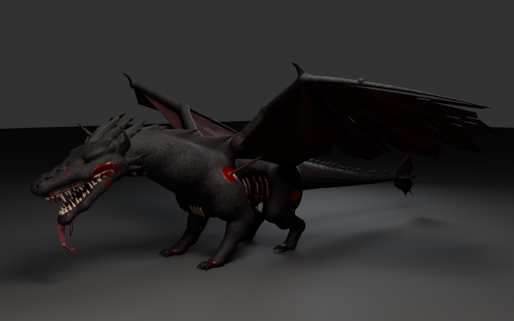
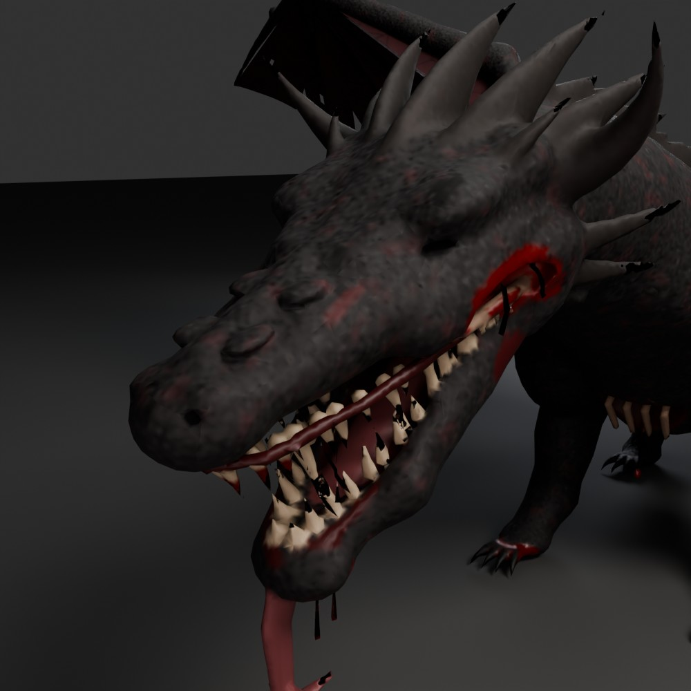
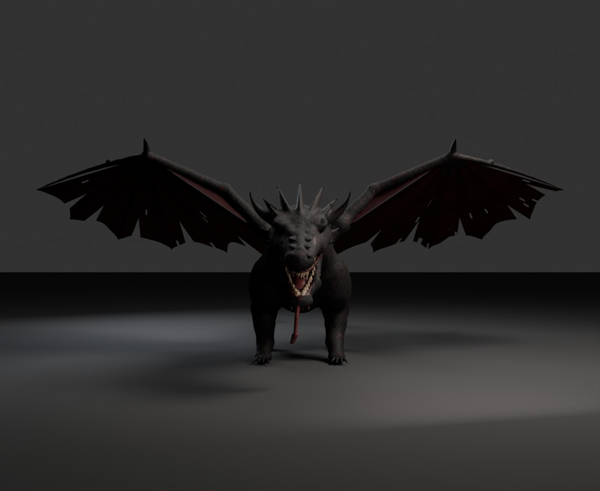
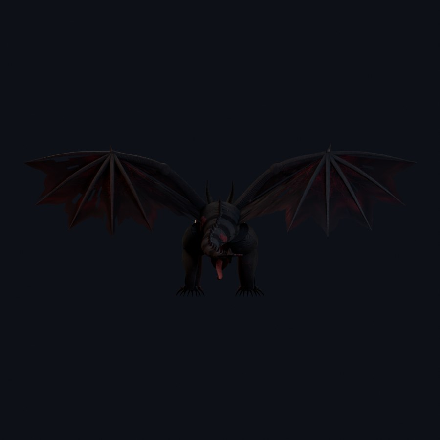
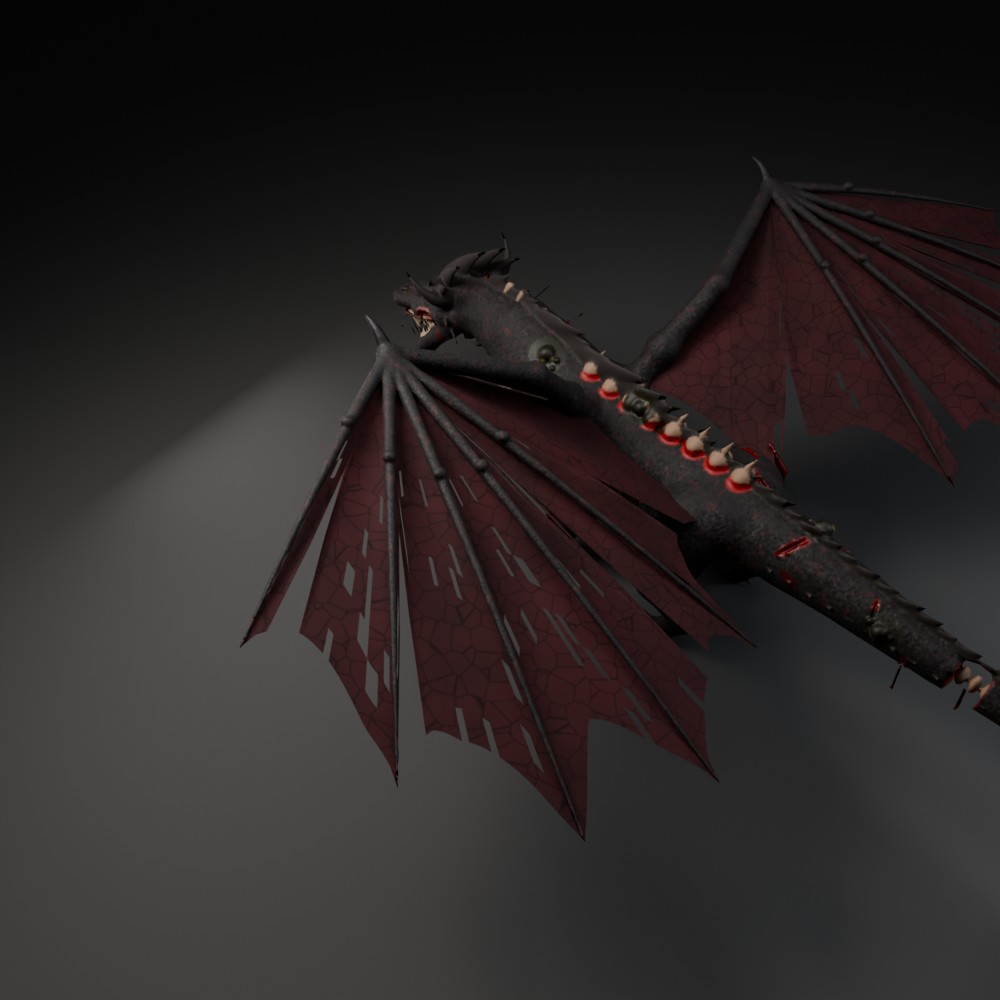
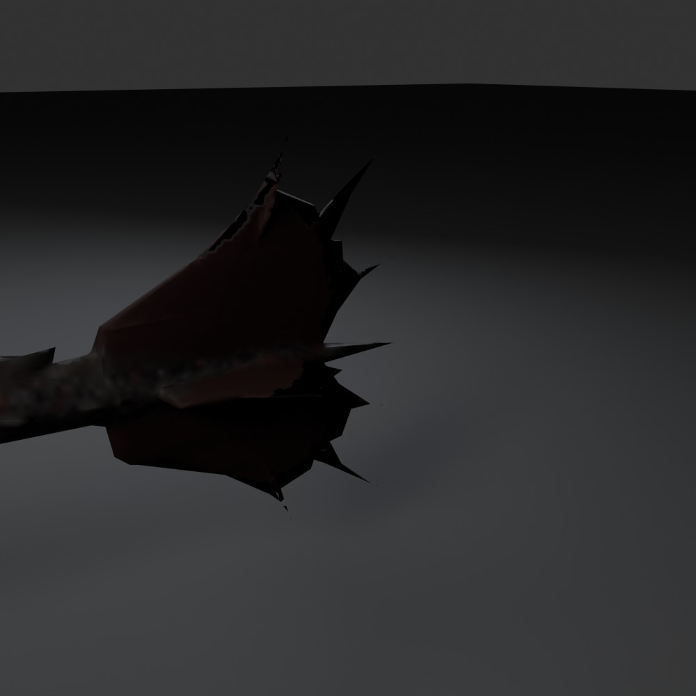

Dragón Depredador

Dos puntos blancos hundidos bajo una ceja pesada. En Roblox son de material Neon con bloom, y la cabeza gira para mirar fijamente al jugador esté donde esté.

Cazador de emboscada, pesado y bajo. Avanza con la cabeza gacha y la boca entreabierta, babeando. Su piel negra de escamas está rota en varios sitios: por las heridas se ven la carne viva y las costillas.
Medidas del modelo
Paleta (de tu hoja)
#1b191a#3a332f#6e1c22#b07a78#e8e2d8#f5f7ffModelo y animaciones
Animación
Ver
Con «Te mira» la cabeza y el cuello siguen a la cámara: gira alrededor y sus ojos no te sueltan. En Roblox hace lo mismo con el jugador.
«Oscuridad» apaga las luces como en la vitrina nocturna de Studio. La geometría, las texturas y los datos de animación son los mismos que en el paquete de Roblox.
Vistas de la ficha






Cómo se tradujo la hoja
- Cabeza ancha de hocico romo, con dos pares de cuernos hacia atrás, espinas en la mejilla y una ceja pesada.
- Fauces abiertas con dos hileras irregulares de colmillos, encías rosadas, babas colgando y una lengua larga que cae y se enrosca.
- Herida grande en el flanco izquierdo con cinco costillas al aire sobre carne viva, más heridas en el flanco derecho, el cuello, la cadera y la cola.
- Cresta continua de púas curvas desde la nuca hasta la cola, más altas sobre los hombros.
- Alas enormes, de 35 studs de punta a punta, con cinco dedos, borde rasgado y membrana granate con venas.
- Cola larga, de seis segmentos, con púas laterales y una aleta dentada en la punta, como en la vista superior de la hoja.
- Patas musculosas con codos marcados, espolón óseo y cuatro garras negras más el dedo trasero.
Rig para Roblox
Una MeshPart por hueso, unidas por Motor6D, como un personaje R15. Las piezas se solapan en cada unión para que no se abran huecos al girar. El instalador reconstruye el rig a partir de rig.json.
Root (ancla, invisible) └─ Hips ├─ Chest │ ├─ Neck1 ─ Neck2 ─ Head │ │ ├─ Jaw ─ Tongue │ │ └─ EyeL · EyeR (Neon) │ ├─ LegFL_Upper ─ LegFL_Lower ─ LegFL_Foot │ ├─ LegFR_Upper ─ LegFR_Lower ─ LegFR_Foot │ ├─ WingL_Arm ─ WingL_Hand │ └─ WingR_Arm ─ WingR_Hand ├─ LegBL_Upper ─ LegBL_Lower ─ LegBL_Foot ├─ LegBR_Upper ─ LegBR_Lower ─ LegBR_Foot └─ Tail1 ─ Tail2 ─ Tail3 ─ Tail4 ─ Tail5 ─ Tail6
| Pieza (MeshPart) | Padre | Triángulos |
|---|
Paquete para Roblox Studio
SetLookTarget para la mirada.Pasos en Studio
Avatar › Import 3D(oHome › Import 3D) y eligePredatorDragon.fbx. DejaRig TypeenNo Rigy no combines las mallas.- Selecciona el modelo importado en el Explorer.
View › Command Bar: pega todoInstallPredator.luay pulsa Enter.- Pulsa Play. Se hace de noche, el dragón aparece en
Workspace.DragonShowcase.Stage_Predatory te sigue con la mirada. Las teclas 1 a 9 lanzan las animaciones y L alterna día y noche.
Qué conviene revisar
- Las uniones son rígidas. En giros grandes, como Death o Fly, se nota el solape entre piezas.
- Con 100.400 triángulos es un modelo de jefe. Para muchos dragones a la vez hará falta una versión más ligera.
- Walk y Run se animan en el sitio. Faltan el movimiento por el mapa, la IA, el daño y los sonidos.
- El instalador no se ha ejecutado dentro de Roblox Studio. El código compila en Luau y el animador está verificado contra este visor, pero falta la prueba de tu amigo.
Para dar todavía más miedo
- Que los ojos parpadeen muy de vez en cuando: unos segundos a oscuras y vuelven a aparecer más cerca.
- Una respiración grave en bucle que se oiga antes de verlo.
- Gotas de baba (partículas) que caen de la mandíbula en Idle.
- Que en la noche solo se acerque cuando el jugador no lo está mirando.